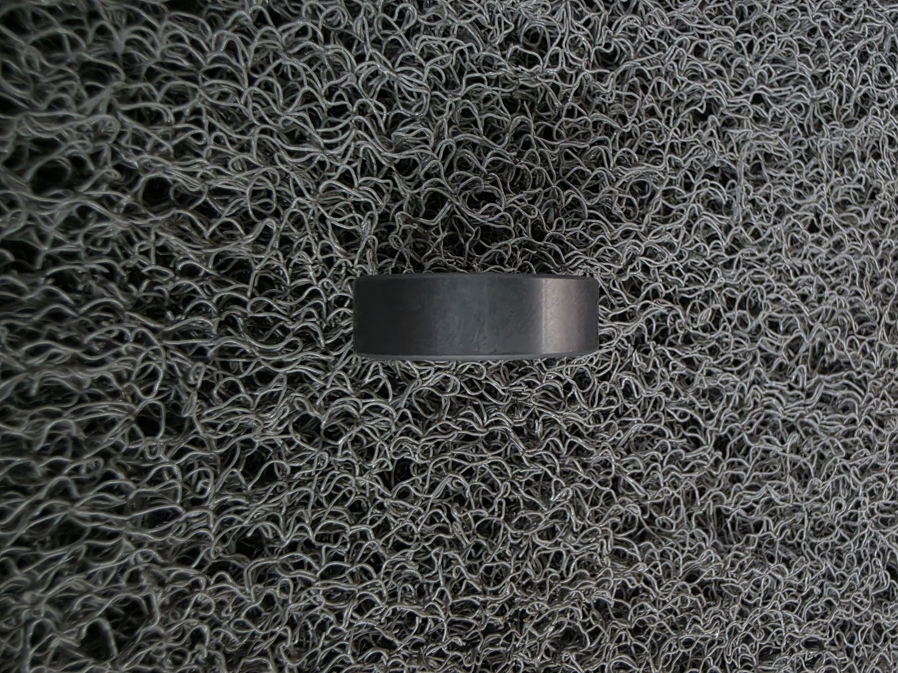
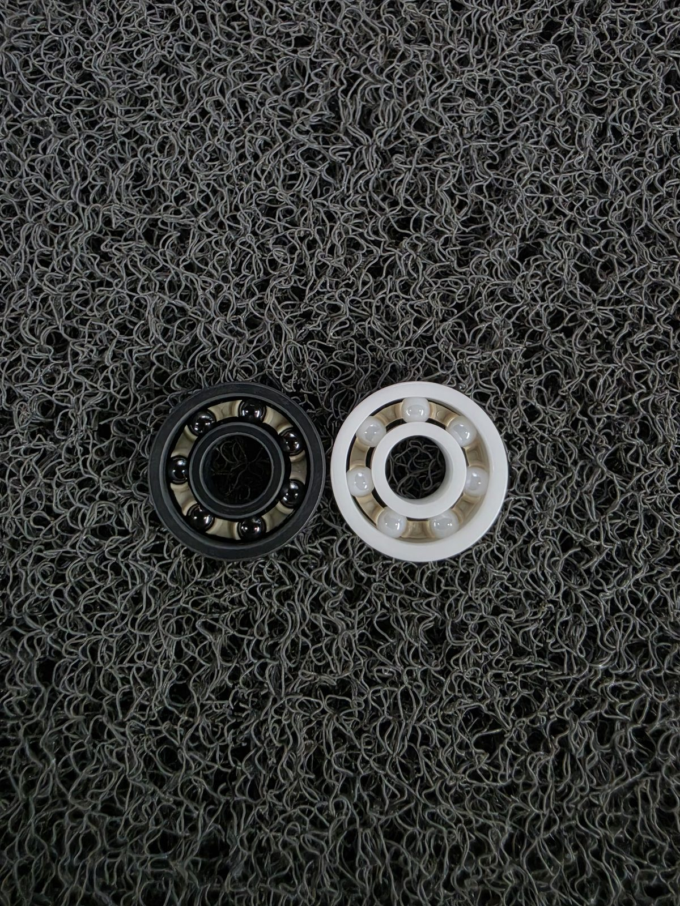
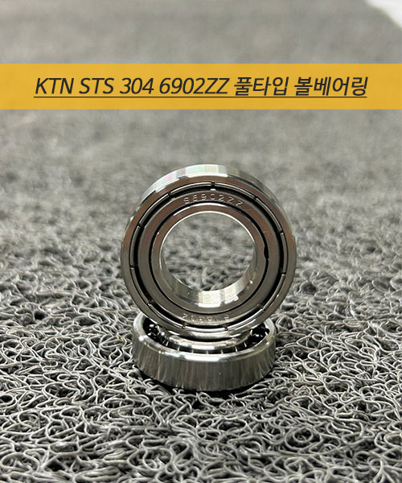

제품 라인업

ZrO₂ 풀세라믹 베어링
내륜·외륜·볼 전체 세라믹 — 완전 비자성·내부식

Si₃N₄ 하이브리드 베어링
세라믹 볼 + 스테인리스 링 — 고속 회전·고하중용

PEEK 리테이너 세라믹 베어링
ZrO₂ 풀세라믹·Si₃N₄ 하이브리드 실물 2종

PEEK + 세라믹볼 조합 베어링
플라스틱 링 + 세라믹 볼 — 경량·내화학 조합

복합 소재 특주 베어링
PEEK+PTFE+Si₃N₄ 커버형 복열 — 비규격 특주 사례

스테인리스 풀볼 베어링·강구
STS304 풀볼 타입 — 리테이너 없는 고하중 구조
이런 상황이면 문의하십시오 — 비자성 환경이라 일반 베어링을 못 쓴다, 세라믹 베어링 수입 납기가 너무 길다, 강볼 베어링 자리에 세라믹으로 교체하고 싶다. 사용 환경만 알려주시면 소재 조합을 제안해드립니다.
기술 인사이트 — 세라믹 베어링·볼
볼 등급
세라믹 볼 등급 G5·G10·G25 — 숫자의 의미와 가격 차이
볼 소재 비교
세라믹 볼 소재 3종 비교 — ZrO₂·Si₃N₄·Al₂O₃
하이브리드 개조
쓰던 베어링, 볼만 세라믹으로 바꿔도 되나요 — 개조 조건 3가지
밸브·펌프 적용
세라믹 볼, 베어링에만 쓰는 게 아닙니다 — 체크밸브·유량계
소량 구매
세라믹 볼 1개부터 사는 법 — 규격 읽기·견적 정보 4가지
선택 기준
세라믹 볼 하이브리드 vs 풀세라믹 — 무엇을 선택할까
반도체 · 비자성
세라믹(ZrO₂·Si₃N₄) 반도체 비자성 환경 선택 기준
문제 해결
세라믹 베어링 파손의 진짜 원인 4가지
교체 가이드
강볼 베어링 자리 세라믹 드롭인 교체 시 확인할 4가지
국산 가공
세라믹 볼베어링, 저희가 ±0.001mm로 직접 깎습니다
복합 소재
STS304+PEEK+세라믹 볼베어링 소재 선택
스테인리스 풀볼
STS304 6902ZZ 풀볼 베어링 사양
무급지
무급지 베어링, 세라믹이면 가능한 조건
특성 비교
세라믹 베어링 특성 비교 — 롤러스케이트 사례
비자성·내부식 환경, 세라믹으로 해결하세요
사용 환경(자성·화학·온도·하중)만 알려주시면
풀세라믹·하이브리드 중 맞는 조합을 무료로 제안해드립니다.
평일 09:00~18:00 / 긴급 문의 24시간 접수 · MOQ 1개